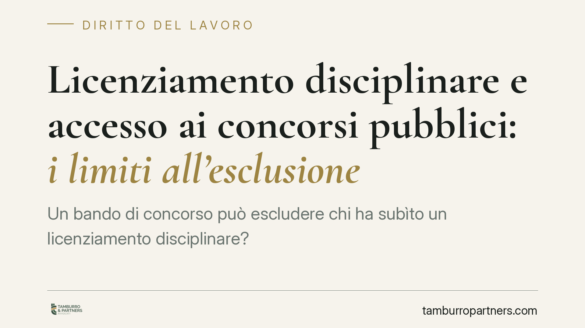

Licenziamento disciplinare e accesso ai concorsi pubblici: i limiti all'esclusione
Un bando di concorso può escludere chi ha subìto un licenziamento disciplinare? La giurisprudenza amministrativa ammette la clausola, ma a condizioni precise: la preclusione deve essere temporanea, recente e proporzionata, non una condanna a vita. Il tema tocca candidati ed enti pubblici e impone attenzione sia alla redazione del bando sia ai termini di impugnazione.

Il caso
La questione è ricorrente nelle procedure concorsuali degli enti locali: un bando prevede, tra i requisiti di accesso, l'assenza di un precedente licenziamento disciplinare. Un candidato con un simile trascorso viene escluso e contesta la clausola, ritenendola una sanzione sproporzionata e di fatto perpetua.
Secondo l'orientamento del giudice amministrativo, una clausola di questo tipo non è di per sé illegittima. Lo diventa quando trasforma un fatto passato in un'esclusione a tempo indeterminato, priva di correlazione con l'attualità e la gravità della condotta.
> Nota: le pronunce di merito e di legittimità sul punto vanno sempre verificate nei loro estremi esatti prima di qualunque uso in sede difensiva. In questa sede ci limitiamo all'orientamento, senza attribuire valore definitivo a singole sentenze non confermate.
Inquadramento normativo
L'accesso agli impieghi nelle pubbliche amministrazioni avviene di norma per concorso, come stabilito dall'art. 35 del D.Lgs. 165/2001 e dalle regole procedurali del D.P.R. 487/1994, che disciplinano requisiti e modalità di partecipazione. L'amministrazione gode di discrezionalità nel fissare i requisiti, ma entro i limiti costituzionali.
Il bilanciamento si gioca tra due principi. L'art. 51 Cost. garantisce a tutti i cittadini l'accesso agli uffici pubblici in condizioni di eguaglianza. L'art. 97 Cost. impone il buon andamento e l'imparzialità dell'amministrazione, interesse che giustifica la selezione dei candidati anche in base all'affidabilità. La clausola escludente è legittima solo se supera il test di proporzionalità: deve essere idonea allo scopo, necessaria e non eccedente rispetto al fine perseguito.
Le tre condizioni cumulative
Perché la preclusione regga, devono ricorrere insieme tre requisiti.
- Temporaneità: l'esclusione deve avere una durata determinata. Una preclusione a vita è sproporzionata e, di fatto, una sanzione aggiuntiva a quella già subìta.
- Recenza: il licenziamento deve essere relativamente prossimo nel tempo. Un fatto risalente perde capacità di incidere sull'attuale idoneità del candidato.
- Proporzionalità: la gravità della condotta che ha causato il licenziamento deve essere coerente con l'esclusione. Non ogni licenziamento disciplinare ha lo stesso peso.
L'assenza anche di uno solo di questi elementi rende la clausola vulnerabile.
Implicazioni pratiche
Per il candidato. L'esclusione non è automaticamente legittima. Occorre valutare se la clausola rispetti i tre requisiti e se l'applicazione al caso concreto sia corretta. Centrale è il tema dei termini: secondo l'Adunanza Plenaria del Consiglio di Stato n. 4/2018, le clausole del bando vanno impugnate immediatamente solo quando sono *escludenti*, cioè impediscono la stessa partecipazione; negli altri casi si impugnano insieme all'atto applicativo lesivo. Una clausola che preclude l'accesso in base a un precedente licenziamento rientra tipicamente tra quelle immediatamente lesive, con conseguente onere di impugnazione tempestiva nei sessanta giorni dalla conoscenza del bando.
Per l'amministrazione. La redazione del bando richiede cautela. Una clausola generica o perpetua espone la procedura al rischio di annullamento, con conseguente necessità di rinnovare la selezione. È preferibile ancorare la preclusione a parametri oggettivi di durata e gravità.
Cosa fare in concreto
- Verifica i termini subito: se la clausola è immediatamente escludente, l'impugnazione al TAR va proposta nei sessanta giorni dalla pubblicazione del bando, non dall'esito.
- Documenta il tuo caso: conserva il provvedimento di licenziamento, l'eventuale esito di contenziosi sul licenziamento stesso e ogni elemento sulla sua natura e data.
- Valuta la proporzionalità: confronta la gravità della condotta contestata con l'ampiezza e la durata dell'esclusione prevista dal bando.
- Per gli enti: definisci nel bando la durata della preclusione e correlala a categorie di condotte, evitando formule assolute o indeterminate.
- Rivolgiti a un professionista: è opportuno un esame del caso concreto da parte di un legale, data l'incidenza dei termini decadenziali sulla possibilità stessa di tutela.
Conclusione
La linea è netta: il passato disciplinare può limitare l'accesso ai concorsi, ma non può diventare una condanna definitiva. La tenuta della clausola dipende dall'equilibrio tra tutela dell'amministrazione e diritto di accesso del cittadino. Per entrambe le parti, la differenza la fanno i dettagli: la formulazione del bando e il rispetto dei termini di impugnazione.
---
*Contributo informativo a cura di Tamburro & Partners - Avv. Giuseppe Tamburro. Non costituisce parere legale.*
Ogni storia di lavoro ha i suoi tempi.
Se gestisci HR e vuoi un confronto su contenzioso, ispezioni o licenziamenti, scrivi allo studio. Ti rispondiamo entro un giorno lavorativo.